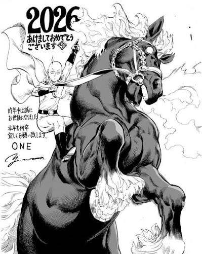

Sobre o mangá


Webcomic original
Criador: escrita e desenhada exclusivamente por ONE na internet, a partir de 2009.
Estilo visual: traço extremamente rudimentar, quase como rabiscos ou rascunhos feitos sem refinamento técnico (personagens desproporcionais e cenários simplificados).
O valor: é a obra-prima crua de ONE. O humor funciona perfeitamente, o ritmo é ágil e o roteiro avança direto ao ponto. Muitos fãs a apreciam pela sinceridade artística e por estar, na maioria das vezes, um pouco mais avançada em termos de enredo geral na internet.
Mangá comercial
Criadores: roteiro de ONE adaptado e expandido, com a arte espetacular de Yusuke Murata.
Estilo visual: é um dos mangás mais bonitos visualmente da atualidade. Murata traz um traço hiperdetalhado, anatomia realista para os corpos musculosos, expressões faciais marcantes, sombreamento impecável e cenas de ação que parecem saltar das páginas com movimento fluido de cinema.
O valor: funciona como uma versão "superprodução". Murata não apenas redesenha o roteiro original, mas ganha liberdade para expandir o universo: cria lutas muito mais longas, detalha arcos inteiros (como a massiva Guerra contra a Associação de Monstros), aprofunda os dilemas e o passado dos heróis de Classe S, e enriquece a escala das batalhas sem perder a essência cômica e satírica de Saitama.